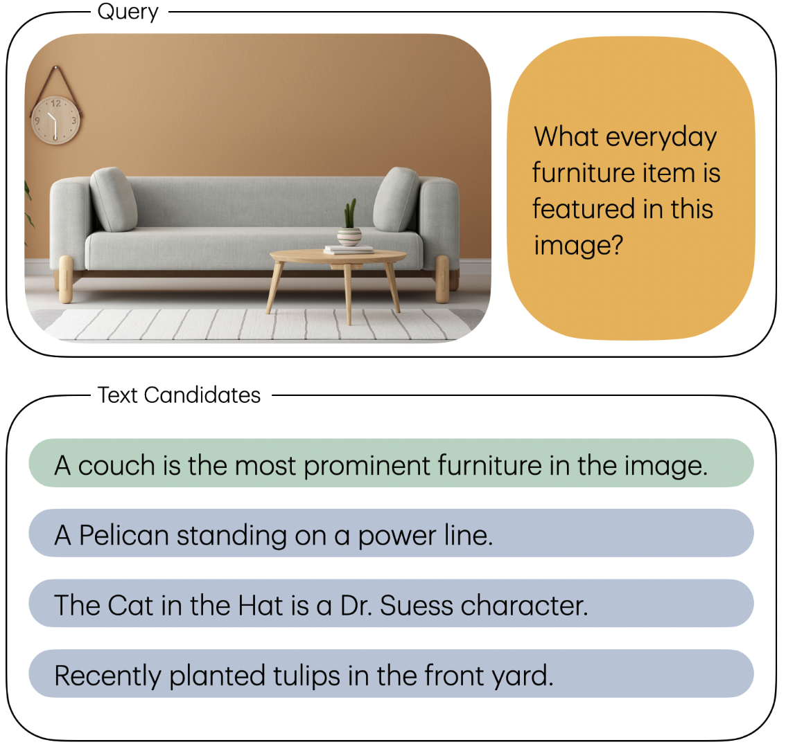

<section class="section hero is-light">
    <div class="container is-max-desktop">
        <div class="columns is-centered">
            <div class="column is-four-fifths">
                <!-- Centered Title -->
                <div class="has-text-centered mb-6">
                    <h1 class="title is-1"><TT>CtrlBench</TT></h1>
                </div>

                <!-- Content Columns -->
                <div class="columns is-vcentered">
                    <!-- Text Content -->
                    <div class="column is-half">
                        <div class="content has-text-justified">
                            <p>
                                Many CLIP embedding models only support 224x224 as the input resolution.
                                We find that downscaling images before embeddings results in significant performance
                                degradation in some tasks (for example: <a
                                    href="https://arxiv.org/abs/2007.0855">ImageNet-A</a>).
                                Therefore, we support image embedding with dynamically chosen resolutions, allowing the user
                                to tradeoff between compute and embedding quality.
                            </p>
                        </div>
                    </div>

                    <!-- Image Column -->
                    <div class="column is-half">
                        <figure class="image">
                            
                        </figure>
                    </div>
                </div>
            </div>
        </div>
    </div>
</section>